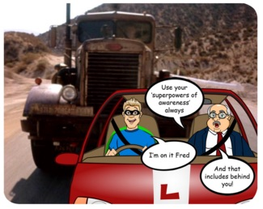
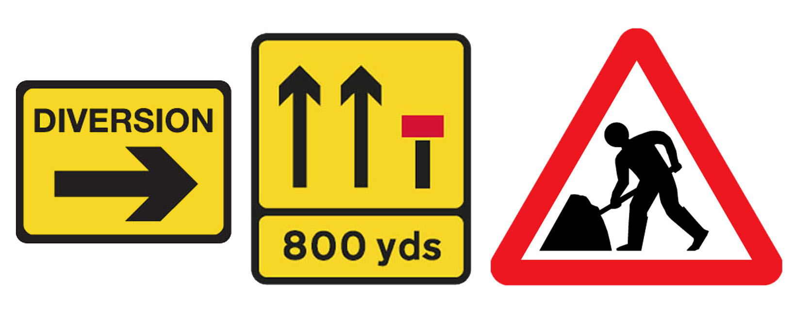
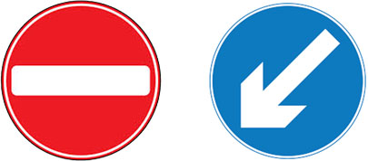

It is important to constantly anticipate and be aware of road and traffic conditions in order to plan your drive around hazards and for smooth progress.
Hazard Perception
Move your eyes so that you see just ahead of the car to maintain your road position and into the mid and far distance for hazards or clues of hazards you can be ready to respond to, such as:
- Occupied parked cars which might pull away or whose doors might open.
- Parked vehicles around which could be pedestrians. eg. buses, dustbin lorries, maintenance vehicles, delivery vehicles.
- Vehicles reversing from driveways.
- Pedestrians crossing unexpectedly, perhaps from behind parked cars.
- Cyclists weaving to negotiate potholes or obstructions.
- Traffic emerging from obscured side roads.
- Oncoming vehicles overtaking on your side of the road.
- Traffic ahead braking sharply.
Be familiar with and alert to road signs. Remember that triangular ones can be vital warnings.
On identifying a potential hazard, check your mirrors for the proximity and driving style of any following traffic. Depending on how the situation develops and/or how close the following traffic is, you may need to cover the brake or gently slow down and/or stop.

Fred encounters the truck from 'Duel', Spielbergs second feature film.
Smooth and Eco Driving
As well as preparing yourself for hazards, plan to drive smoothly as you negotiate regular road features and ocurrences such as:
- Traffic lights. Consider how long a light has been on green and be ready to react with an early mirror check. Approach red lights steadily with the thought that it may change to green. With a steady approach you may not need to stop and start again.
- Pedestrian crossings, especially where pedestrians are around or waiting.
- Roundabouts. Looking up early and approaching smoothly can make the difference between stopping and starting or proceeding without stopping.
- Roadworks and obstructions.
- Bus lanes and cycle paths.
Avoiding rapid acceleration and braking can save 15% in fuel consumption. As well as being gentler on your fuel budget and vehicle wear and tear, this kind of driving results in less harmful emissions, an important factor in this day and age!
Using the highest practical gear reduces fuel consumption but as you slow down to deal with hazards or road features think about gearing down to match your new speed. Always be in the appropriate gear to maintain full control of the car. Too high a gear could result in pulling you too fast or, if the brake is applied, stalling.
Planning In The City
Driving through the city can require heightened levels of anticipation and planning. Where there are multiple lanes, you should usually keep to the left in order to allow faster traffic to pass on the right. But in the left lane you are more likely to encounter obstructions, whether they be parked cars, taxis, delivery vehicles or buses. Recognising them early, allows for easier and safer lane changes.
In slow moving traffic, think about where you will stop. Blocking Pedestrian crossings is illegal and blocking side roads can stifle traffic flow, both in and out of them.
Roadworks
Roadworks are a common feature of city driving. Look out for warning signs and yellow diversion signs which will guide you around closed lanes and onto diversion routes.

Be very careful as temporary signs and markings are not always as clear as permanent ones.
Especially through junctions, look out for ‘no entry’ and ‘keep left or right’ signs, which will be placed to guide you.

Be prepared for temporary speed limits, especially where people are working on the roads.
Emergency Vehicles
Look and listen for emergency vehicles. It can be difficult to locate the direction a siren is coming from so be especially alert until you've seen the vehicle.
If necessary, slow down or pull over, to allow the vehicle to pass, though not before the brow of a hill, bend or narrow stretch of road. Don't be so eager to pull over that you actually block the traffic. Be prepared for other drivers to pull over and continue to comply with all traffic signs.
Signalling for the emergency vehicle can give its driver extra confidence to pass.